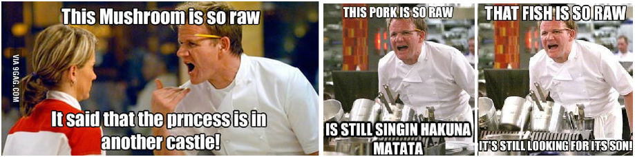
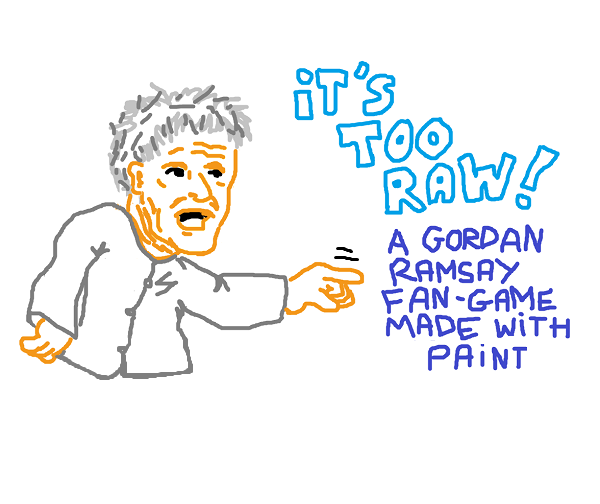
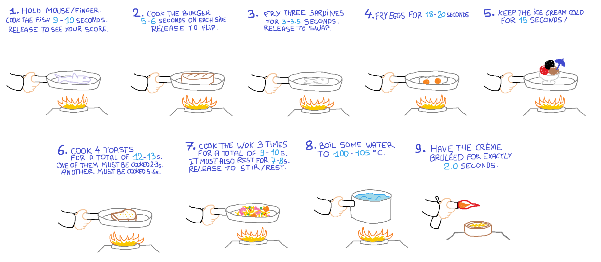
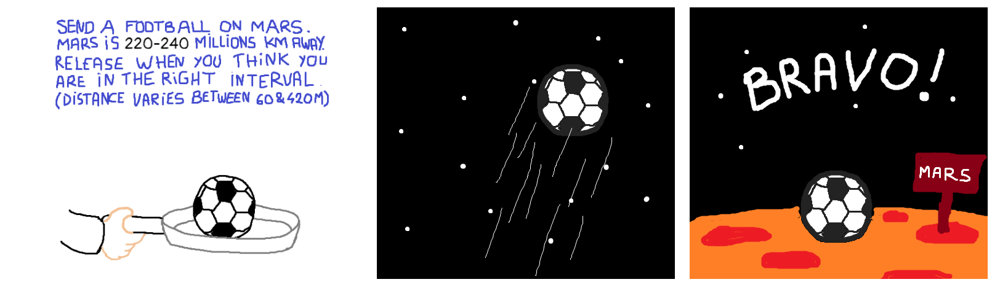
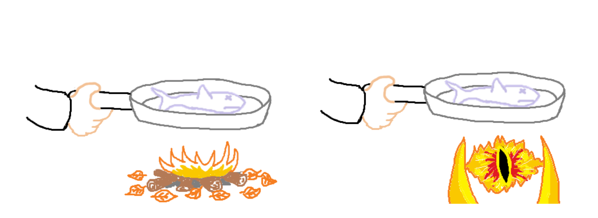

Gamedev JS 2022
April - May 2022
Links
Play "IT'S TOO RAW!" on Itch.
Source code on Github.
Making-of
Welcome!
In 2022, I competed to the JS13KGames spin-off game jam GamedevJS 2022.
This event is shorter (13 days only), and has no size restriction. The entries must be playable in a browser and a theme is provided at the beginning.
The 2022 theme was RAW.
Having not a lot of spare time, I decided to develop my entry in 13 hours (about 1 hour per day).
The theme made me think of the Gordan Ramsay memes where he yells "IT'S TOO RAW" or "it's so raw that ...", so I decided to make a cooking game in reference to these memes.

I also decided to not overshare it online, no daily tweets, no time-lapse, no lengthy making-of, just focus on the game in order to release on time.
On day one, I drew the title screen in MS Paint and implemented the game's engine.

By game engine, I mean the very basic mechanics that exist in my game:
- draw images on a responsive canvas.
- listen to clicks / taps to start the game.
- listen to mousedown/mouseup (on desktop), touchstart/touchend (on mobile) to cook stuff in the frying pan.
- count the cooking time and display the score on release.
On days 2-10, I implemented the 9 game's levels:
- Draw the level's rules with Paint (I tried to find an original challenge for each level, that's why the game is very short).
- Draw the food (raw / cooked). The game progressively draws the cooked image onto the raw one while cooking.
- Implement all the specific checks to see if the player has won or lost the level.
- For the last ones, I also to drew other ustensils (pan, fire thrower...).
- There are also foods that need to be cooked multiple times, or in multiples pieces, so I also had to implement little animations to represent that. And hwew, it's tiring to properly rotate a png on itself on a 2D canvas. I'm too used to how easy things are in CSS3D.

(I considered cooking random stuff after the third level, and cook Gordan Ramsay himself in the last level, but I finally decided to stick to normal food)
On day 11, I asked a few friends to try the game. Thanks to them, a couple edge case bugs could be fixed pretty easily, and the difficulty of some levels was adjusted too. One of them found the game extremely frustrating. Others just found it funny.
Then I developed an easy mode (with longer time intervals to complete each level)... and draw the rules of all the levels in Paint a second time to represent these new intervals.
On Day 12, I implemented the bonus page with the WebMonetization feature the easy mode switch) and Decentralised features (NEAR e-shop, IPFS leaderboards, and a bonus challenge related to the MPL sponsor where a footall must be sent on Mars, but the distance to Mars fluctuates between 60 and 400 million kms).
I drew two extra artworks for this special Mars level.

Finally, I threw in a little white noise for the frying sound and a melody of 6 notes for the soundtrack (I didn't have the time or talent to do more than that), and submitted.
Here's what the first bonus skins from the NEAR shop look like:

Results
- The game arrived #12 (out of 95) for the overall score.
- It was ranked #1 for the theme (RAW), #2 for Decentralized, #3 for WebMonetization, #8 for Innovation, #13 for gameplay, and far behind for graphics and audio.
- My gains are: 1 t-shirt, 1 powerbank, some stickers, $200 cash thanks to WebMonetization experts, a 6 month 4EVERLAND business thanks to Decentralized experts, 40 NEAR coins, and 500 USDC coins!
Feedbacks
- raptor9999: I didn't think I was going to like it at first, but after the 2nd or 3rd round I loved it! Played through the whole thing and it was very fun and innovative!
- Omhet: This game made me laugh :0 Very innovative take on a casual genre. I think Gordon would've like it. It's funny that there is another similar game in this jam "This egg is raw" NEAR integration doesn't work. I think it's because of Itch, I wish you deployed it somewhere else to try NEAR.
- Sureno: Baking ice cream is very difficult,... Are you hosting on another site to connect to near wallet or ipfs? If you do, I'd love to know the url!
- Dashing Strike: Aww, I was enjoying the game, then clicked Bonuses to see what was in there, and it reset my progress -_-. Game got easier once I figured out approximately how long the sound loop was and started using that for counting =). Graphics were surprisingly good for how raw they were =).
- caiofov: Nice simple game! I like your creativity. I'm addicted to it haha
- Omniclause: Cool simple little game. Interesting and unique main mechanic like none of seen before and surprisingly engaging. Also a very good implementation of the theme. Nice job!
- SpaceMarco: great game now I feel like a real chief
- Ardiam Games: Great wee game - simple and fun. The picture of Gordon Ramsay is amazing :D You should send it to him and see what he says :P Good job!
- svntax: The ice cream level was clever. I didn't realize what I was doing wrong for quite a while there. Overall very fitting for the theme, with good twists for each new level.
- Johnonym: Simple, but surprisingly fun game. The art style and gameplay fits the theme well. I’m not sure how I can test the decentralized features. Do you have the game hosted elsewhere? It was a fun challenge trying to send the ball to Mars.
- J.C. Games: Got to the little fish at round 3, love the simple concept and fits the theme really well!
- monoDinoDev: at level 4 i got nervous, so i cheated with my stop watch... :) nice and fun concept!! love the drawings and gordon ramseys finger
- stas: Great concept: simple, elegant and funny. The gameplay is challenging, if a bit frustrating :) But I get it that you cannot have it any other way in a game about Gordon Ramsey! The drawings are lovely and the use of white noise is brilliant. Also, the ice cream puzzle is 😎.
- BuyMyBeard: “This fish is so raw, he’s still finding Nemo.” really enjoyable game btw
- Björn Ritzl: Making the game easier with Web Monetization enabled is an ok bonus, but I'd prefer something more integrated into the game. Additional items to cook? Some unique cooking challenge?
- Ewa Mazur: The „Bonuses” option is defenitely something I want to click and check out, so I really like the way you’re informing subscribers and non-subscribers about extra stuff they have/can get.
- Nathan Lie: The game is quite charming (if a little frustrating). The Web Monetization bonus helps to allieviate that and makes the Gordon Ramsay wisecracking more accessible to timing-impaired players.
- Daniel Keller: It's too raw, very simplistic, love the theme, the sound could use a little more, its to raw.
- Tim Sulmone: Stuck to the theme perfectly, loved the aesthetics and artwork to really bring out the "raw".
- Val Suszk: Loved the concept, game's minimalistic design and music, "it's raw!"
- Vlad Grichina: Login with NEAR gives unlockable bonus (skins).
- Adam Fuller: Fun and simple idea, judgement & slightly randomness based, I like it.
- Tom Greene: Engaging fun and immediately accesible - obviously very simple.
Conclusion
Thanks so much everyone and see you very soon for a new game!